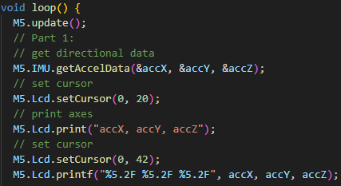

Embedded programming is software written for hardware systems and electronics. These projects under this objective target robotics systems and tackle interfacing with electronic devices, beyond just digital computer interfaces.
Project #1:
This is a navigational code I used for our small bot last VEX season. It works by recording the movement of the robot, tracking the voltage output of each motor, and saves these events as motor commands to a text file. The resulting text file could then be ran as instructions for the robot to repeat the recored the movement. This was used to tackle the challenge of autonomous movement. This code was saved to the VEX brain and the text file was automaticaally written to an SD card.